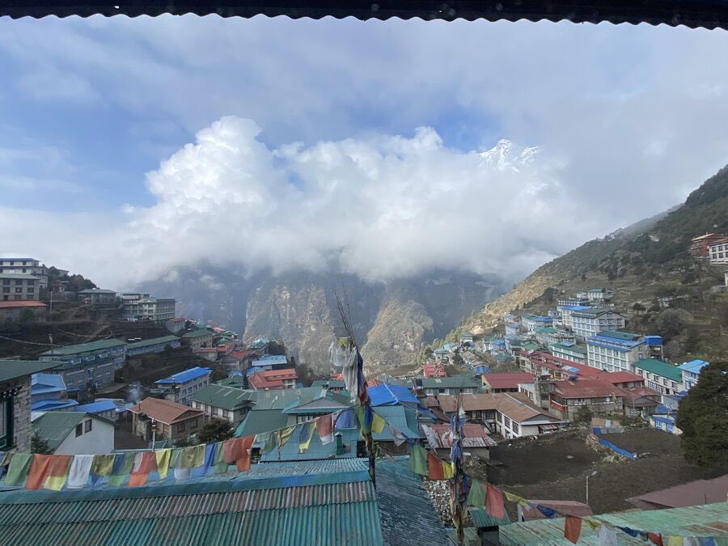

Günlük
Tur
Her akşam lodge'da yazıldı; çoğu zaman boş powerbank ve soğuk parmaklarla.
Varış


Khumbu'da yolda

1. Gün
Haydi bakalım
Lukla'dan Phakding'e
7,6 km−330 m

2. Gün
Namche Bazaar'a doğru
Phakding'den Namche Bazaar'a
11,4 km+808 m

3. Gün
1. aklimatizasyon günü
Namche Bazaar'da
1,5 km+335 m

4. Gün
Everest'e ilk bakış
Namche Bazaar'dan Deboche'ye
10,4 km+525 m

5. Gün
Hedefe yaklaşıyoruz
Deboche'den Dingboche'ye
10 km+572 m

6. Gün
Aklimatizasyon, ikinci tur
Dingboche'de
1,2 km+350 m

7. Gün
Dünyanın en yüksek buzulunda
Dingboche'den Lobuche'ye
8 km+576 m

8. Gün
Ana Kamp'ta doğum günü
Lobuche'den Gorak Shep'e ve EBC'ye
13,2 km+450 m

9. Gün
5.600 metre
Gorak Shep'ten Dzonglha'ya
14,7 km+245 m

10. Gün
Buz alanı
Dzonglha'dan Dragnag'a
8,3 km−800 m

11. Gün
Buzulun üzerinden
Dragnag'dan Dole'ye
15,6 km−620 m

12. Gün
Mümkün olduğunca hızlı inmek
Dole'den Namche Bazaar'a
11,7 km−610 m

13. Gün
Zorla da olsa
Namche Bazaar'dan Lukla'ya
19,2 km−582 m

14. Gün
Hoşça kal Khumbu
Lukla'dan Katmandu'ya
−1.480 m
Aralık 2021 – Nisan 2022
Hazırlık
Planlama, antrenman, ekipman: uçuştan önce olan her şey.
- Yola çıkış günü kiloBugün, yola çıkış gününde, kendimi bir kez daha tarttım. 77,2 kilo iyi. %22,4 vücut yağ oranı pek harika değil ama şimdiye kadarkinden daha iyi. Seyahatten sonra oranın nasıl olacağını …
- Bavul hazırlığıKatmandu'dan Lukla'ya uçuşta 15 kilo bagaj götürebiliyoruz. 10 kilo denizci çantasında ve 5 kilo günlük sırt çantasında. Her şey tekrar düzgünce torbalara yerleştiriliyor ki sonra çantada …
- Geri sayım başlıyorNepal'deki trekking turumuzun başlamasına sadece bir hafta kaldı. Artık yavaş yavaş yola çıkmak gerek, huzursuzlanıyoruz … Son haftalarda daha birçok işi hallettik. Kalan ekipman …
- Etap animasyonuAşağıda turumuz öne çıkan noktalarıyla animasyon olarak gösteriliyor:
- EkipmanSon iki haftada ekipmanımızı tamamladık. Yani esas olarak Yeşim'in ekipmanını aldık. Nepal'e ve Ağrı Dağı'na yaptığım önceki turlardan bazı eşyalar hâlâ bende ve onları kullanmaya devam …
- Şubat ayı koşu performansı3 gün daha az olmasına rağmen şubatta koşu mesafemi 154 km ile önceki aya göre artırabildim. Diz ve sırt şimdilik dayanıyor. Ama koşmaktan çok yürüdüm; hava da çok kötüydü ve daha çok koşu …
- Ocak ayı koşu performansıOcak bitti. Başlangıçtaki zorluklardan sonra antrenman temposunu yavaş yavaş artırdım. Gerçekten berbat, soğuk hava yüzünden alışkanlığımın aksine daha çok içeride, koşu bandında koşmaya …
- Uçuşlar rezerve edildiSeyahati rezerve ettikten sonra artık biletler de alındı. Düsseldorf'tan İstanbul üzerinden Katmandu'ya Türk Hava Yolları ile uçuyoruz. Bu bağlantı bizim için en iyisi ve fiyat-performans …
- Seyahat bilgileriBugün turu kesin olarak rezerve ettim ve uçuşlara baktım. İşte temel bilgiler: Tur Himalayanwonders tarafından düzenleniyor.
- Etaplar17 Nisan: Düsseldorf – İstanbul – Katmandu 18 Nisan: Katmandu: varış 19 Nisan: Katmandu – Lukla (uçak) – Phakding 20 Nisan: Phakding – Namche Bazaar 21 Nisan: Namche Bazaar: aklimatizasyon …
- Fiziksel durumDiz & sırt İtiraf etmeliyim: 2021 iyi bir yıl değildi ve fiziksel olarak hiç bu kadar yıpranmamıştım. Bunu gerçekten Corona'ya bağlıyorum; 2020'de önce kapalı spor salonları, sonra …
- ZirvelerRota, 5.000 metrenin üzerinde 4 nokta içeriyor: Gokyo Ri , 5.357 m Everest Ana Kampı (Nepalce: „Sagarmatha“), 5.364 m Cho La Geçidi , 5.420 m Kala Patthar , 5.545 m Aşağıda, rotanın …
- Yeniden yola çıkıyoruz!2009'dan sonra Nisan 2022'de ikinci kez Nepal'e, hedefim Everest Ana Kampı . Bu sefer bana eşim Yeşim eşlik ediyor; doğum gününü orada, yukarıda kutlayacak. 2009'daki turumun blogu: …